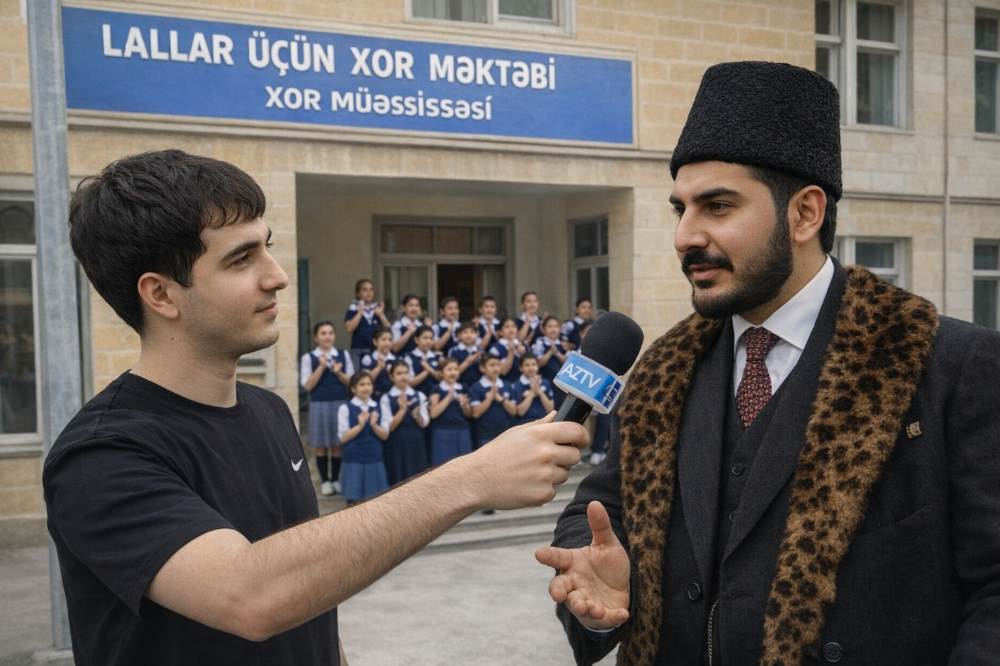

Cəmiyyət & Humanitar
Xeyriyyəçi Arif Bağırov Lallar Üçün Xor Məktəbi Açdı
Böyük humanist Arif Bağırov dünyada bənzəri olmayan bir layihəyə imza atıb. Nitq və eşitmə məhdudiyyətli şəxslər üçün nəzərdə tutulan bu "Xor Məktəbi", musiqinin vibrasiyalar vasitəsilə hiss edilməsi üzərində qurulub. Nazir İbrahimov layihənin tarixi əhəmiyyətini yüksək qiymətləndirib.